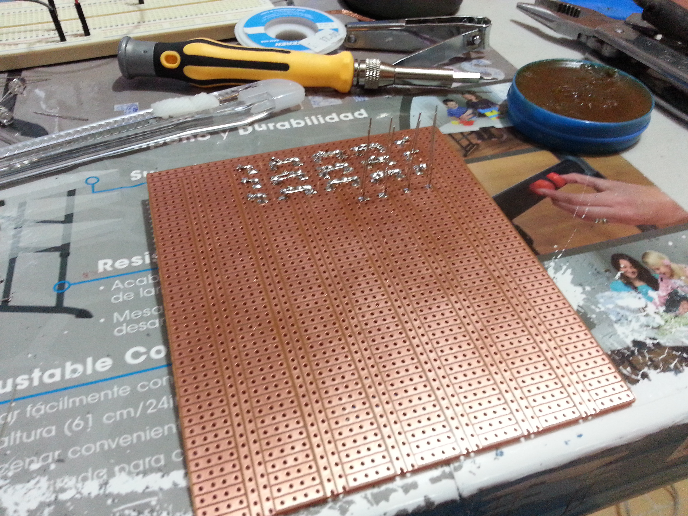

![]()
Matriz de LED's - Linux x64 ASM
Introducción
El proyecto de la matriz de LED’s consta de la construcción de la misma, así como de su control por medio del puerto Serial del Arduino y un programa hecho en ensamblador de 64 bits para Linux:
- Arduino con 12 salidas (Para este caso se empleó el Arduino Mega 2560)
- 8 LED’s por Fila, 8 Filas: 64 LED’s en total
- Registro de desplazamiento de 8 bits 74HC595
- Arreglo de Transistores Darlington ULN2803A
- Tablilla Preperforada
- 8 Resistencias de 220Ω
Notas
Tanto los LED’s como la tablilla podrían no ser necesarios si se tiene una Protoboard lo suficientemente grande y se adquiere una matríz prefabricada de LED’s
Teoría básica sobre el funcionamiento
La función principal de una matriz de LED’s es común: desplegar algo. Puede ir desde una simple figura o hasta un patrón o texto que va de derecha a izquierda (o viceversa).
El elemento importante es el registro de desplazamiento 74HC595, el cual es un circuito integrado del tipo SIPO (serial in, parallel out).
Este actuará como una memoria temporal de 8 bits, 1 bit para cada LED.
Esto, sumado a un procedimiento común de manejar las matrices de LED’s, conocido como escaneo y un defecto humano conocido como persistencia de visión hacen que parezca que combinados, la matriz está encendida en su totalidad siempre, pero eso no es así.
Acerca del Registro
El registro tiene un comportamiento similar al siguiente diagrama:

Esto indica que el registro recibirá el byte a desplegar para cada fila, y así lograr, junto con la combinación de las otras técnicas anteriormente mencionadas, una memoria de video de 8 bytes (un byte por fila).
El encargado de controlar que fila está activa para el proceso de escaneo, es el circuito ULN2803A, el cual es un arreglo de transistores Darlington, el cual se encargará de, dada la señal, poner a tierra la fila indicada, ya que el registro le inyecta el voltaje, así pues, estando a tierra, la fila enciende.
Ejemplo de encendido
Supongamos que el registro recibe el byte B10011001, esto hará que la fila activada en el momento, encienda de la siguiente manera:
Así pues, al recibir una secuencia completa de 64 bits, encendería de la siguiente manera:
Construcción de la matriz
Si se ha optado por construir la matriz, se puede usar el siguiente diagrama como referencia para interconectar los LED’s:

Se ha usado este diagrama para diseñar la matriz de LED’s que se mostrará más adelante.
Soldando la matriz
Primero se va soldando fila a fila, procurando que los cátodos queden todos en serie, mientras que los ánodos de cada columna también irán en serie:



Interconexiones
Se ha tomado como ejemplo este diagrama que muestra como conectar 5 matrices de LED’s a diferentes registros y usando un sólo arreglo darlington para controlarlos, logicamente para este proyecto se simplificó a 1 matriz:

Se siguió el mismo esquema:
- Conectar las salidas del registro a los pines de las columnas de la matriz previamente construida, en serie con las resistencias para evitar quemar los LED’s, ya que la salida de voltaje del registro es de 5v.
- Conectar los pines del arreglo a los pines de las filas de la matriz.
- Soldar las conexiones de los pines del registro a unos cables para poder conectarlos al Arduino
74HC595: Pines a usar
El registro cuenta con unos pines que tienen sus características designadas:
- Entrada de datos (SI) - Por aquí recibe de manera serial los datos a almacenar
- Reloj (SCK) - Controla la entrada de información, leyendo un bit en cada estado de high
- Activar salida (OE) - Este es activo a tierra, lo que quiere decir que habilitará que lo que esté almacenado en el registro al estar de esa manera.
- Reset (SCLR) - Reinicia el valor que tenga almacenado el registro
- Reloj de salida (RCK) - Este controla el paso de la información del almacenamiento interno a la salida paralela del mismo

ULN2803A: Pines a usar
Prácticamente se emplearán todos los pines disponibles, debido a que tenemos 8 tierras, y cada una va conectada a cada salida del mismo.
- I1 - I8 - Estas entradas van a las salidas configuradas en el Arduino, son las que se encargarán de alternar las filas
- O1 - O8 - Cada uno a los pines de fila de la matriz (cátodos)
- COMMON - Este pin se deja sin soldar, ya que es empleado cuando se manejan motores
- GND - Soldado a tierra
¿Cómo queda todo conectado?
Registro

Arreglo


Código Arduino
El Arduino estará configurado de una manera muy simple, donde prácticamente sólo sirve como interfaz entre el registro y el programa en ASM.
El programa realiza lo siguiente:
- Encender/Apagar filas
- Enviar información al registro
- Activar la salida del registro
- Reiniciar el registro
Código
// Pines para controlar el registro de corrimiento
#define dataPin 22
#define latchPin 23
#define clockPin 24
#define resetPin 7
// Pines para el ULN2803
#define row1 30
#define row2 31
#define row3 32
#define row4 33
#define row5 34
#define row6 35
#define row7 36
#define row8 37
#define dt 1
byte buffer[8] = {
0x00,0x0E,0x11,0x03,0x0D,0x11,0x21,0x1F
};
byte pos = 0;
int incomingByte = 0;
void updateRegister(byte data){
resetRegister(0);
digitalWrite(latchPin, LOW);
shiftOut(dataPin, clockPin, LSBFIRST, data);
digitalWrite(latchPin, HIGH);
}
void resetRegister(long dl){
digitalWrite(resetPin, LOW);
delay(dl);
digitalWrite(resetPin, HIGH);
}
void enableRow(byte row){
digitalWrite((30+row), HIGH);
}
void disableRows(){
for(byte i = row1; i <= row8; i++) digitalWrite(i, LOW);
}
void setup()
{
Serial.begin(9600); // Inicia la comunicación serial a 9600bps
// Configuramos los pines del Arduino como salidas
for(int i=row1; i<=row8; i++){
pinMode(i, OUTPUT);
}
pinMode(dataPin, OUTPUT);
pinMode(latchPin, OUTPUT);
pinMode(clockPin, OUTPUT);
pinMode(resetPin, OUTPUT);
resetRegister(0);
}
void loop()
{
if(buffer != NULL){
for(pos = 0; pos <=7; pos++){
disableRows();
updateRegister(buffer[pos]);
enableRow(pos);
delay(dt);
}
}
// Verifica si hay datos por recibir
if (Serial.available() > 0) {
// Leeremos 8 bytes dentro del buffeer
int amount = Serial.readBytes(buffer, 8);
if( amount < 8){
for(int i = amount; i < 8; i++)
buffer[i] = 0x00; // Poniendo a 0 los bytes incompletos
}
}
}
Explicación
Esta sección se encarga de definir los pines que se emplearán para controlar la circuitería de la matriz:
Registro
// Pines para controlar el registro de corrimiento
#define dataPin 22
#define latchPin 23
#define clockPin 24
#define resetPin 7
Arreglo
// Pines para el ULN2803
#define row1 30
#define row2 31
#define row3 32
#define row4 33
#define row5 34
#define row6 35
#define row7 36
#define row8 37
Cómo se estará escaneando la matriz, se define un tiempo. Esenciamente debería ser 0, para que el mismo microcontrolador trabaje el proceso a una velocidad de 16Mhz, pero se le puso el retraso de 1ms para hacer un poco más brillante la salida de los LED’s
#define dt 1
Este código controla instrucciones básicas del registro, como actualizar, reset
void updateRegister(byte data){
resetRegister(0);
digitalWrite(latchPin, LOW);
shiftOut(dataPin, clockPin, LSBFIRST, data);
digitalWrite(latchPin, HIGH);
}
void resetRegister(long dl){
digitalWrite(resetPin, LOW);
delay(dl);
digitalWrite(resetPin, HIGH);
}
El siguiente código controla al arreglo para ir ciclando las filas
void enableRow(byte row){
digitalWrite((30+row), HIGH);
}
void disableRows(){
for(byte i = row1; i <= row8; i++) digitalWrite(i, LOW);
}
Aquí el primer método lo que hace es configurar al Arduino y sus pines en sus modos correspondientes, tal como salida y manda un pulso de reinicio al registro.
El segundo bloque es el ciclo que está ejecutando el Arduino, el cual está mostrando en la matriz la información en el buffer y esperando a recibir más información por medio de la comunicación serial
void setup()
{
Serial.begin(9600); // Inicia la comunicación serial a 9600bps
// Configuramos los pines del Arduino como salidas
for(int i=row1; i<=row8; i++){
pinMode(i, OUTPUT);
}
pinMode(dataPin, OUTPUT);
pinMode(latchPin, OUTPUT);
pinMode(clockPin, OUTPUT);
pinMode(resetPin, OUTPUT);
resetRegister(0);
}
void loop()
{
if(buffer != NULL){
for(pos = 0; pos <=7; pos++){
disableRows();
updateRegister(buffer[pos]);
enableRow(pos);
delay(dt);
}
}
// Verifica si hay datos por recibir
if (Serial.available() > 0) {
// Leeremos 8 bytes dentro del buffeer
int amount = Serial.readBytes(buffer, 8);
if( amount < 8){
for(int i = amount; i < 8; i++)
buffer[i] = 0x00; // Poniendo a 0 los bytes incompletos
}
}
}
Ensamblador
Para esto, se manejó ensamblador en Linux x64 para hacer de esto más fácil, ya que es menos restrictivo en cuanto al acceso de los puertos, como sabemos, en Linux todo es un archivo, y sólo basta con abrirlo para poder manipularlo. En este caso, el archivo del Arduino es /dev/ttyACM0.
Implementación de las letras
Antes que nada, el registro recibirá datos, byte para ser específico, entonces, lo que se quiera desplegar se tiene que formatear en ese espacio de información. Como tenemos un espacio de 8 x 8, tenemos en total 64 bits, o bien 8 bytes, los cuales son más que suficientes para representar cómodamente letras en el clásico estilo de 8 bits.
Para esto, se creó por comodidad, una hoja de cálculo, la cual representa la matriz, y por medio de 0’s los LED’s apagados y 1’s LED’s encendidos respectivamente.
Lo que hace la hoja es mapear cada fila a un byte en representación decimal, luego se convierte a hexadecimal y para finalizar, concatena los 8 bytes para darnos una representación, la cual podemos poner como información directamente en memoria para guardarlo y después poder enviarla al registro.
Código
Código Principal (main.asm)
; External imports
EXTERN print_stdout, read_keystroke, show_menu, clear_screen, open_file
EXTERN close_file, show_lmenu, open_file_parameter, write_to_fd, read_from_fd
EXTERN clean_stack, arduino_display_char, show_pmenu, arduino_display_pattern
; File handling things
%define RW 0q777 ; Octal CHMOD 777 (Read Write Execute)
%define O_WRONLY 1 ; Mode: Write only
%define O_RDWR 2 ; Mode: Read/Write
; Basic linux RAX syscall
%define SYS_EXIT 0x3c
%define SYS_WRITE 0x1
%define SYS_OPEN 0x2
; Basic File Descriptors
%define STDIN 0x0
%define STDOUT 0x1
section .data
NEWLINE: db 10
; Messages
OK: db "Ok!", 10
OKL: equ $-OK
; Error Messages
ENOFILE: db "Error al abrir (No existe o no tiene permisos)",10
ENOFILES: equ $-ENOFILE
EINVCHAR: db "Caracter no reconocido, intente con letras o números",10
EINVCHARS: equ $-EINVCHAR
section .bss
screen: resb 8 ; 8 bytes reserved, 1 for each row
screens: equ 8 ; 8 bytes long, screen size (8 bits x 8 bits)
keybuffer: resb 2 ; 2 bytes for user input
databuffer: resb 128 ; 128 Buffer Bytes
databuffers: equ 128 ; Size of Buffer for reference
ttyfd: resb 8 ; 2 bytes for TTY File Descriptor
bytesread: resb 8
section .text
GLOBAL _start
; General Program
; Last modified: mié 25 may 2016 21:31:33 CDT
_start:
nop
; Open TTY specified in parameters
push ttyfd ; FD Memory Address
push O_RDWR ; Flags
push RW ; Mode
call open_file_parameter
; If FD is less than 0, no file was opened (error)
cmp rax, 0
jl _end_error ; So we jump to exit
; Clean stack
push 3
call clean_stack
; Displays menu
jmp display_menu
nop
display_menu:
call clear_screen
call show_menu ; Call procedure Show Menu
; read from stdin
push keybuffer
call read_keystroke
menu_select:
xor rax, rax ; Clean RAX
mov al, byte[keybuffer] ; Moves the key to the low register part
cmp al, "p" ; If p, pattern
je pattern
cmp al, "l"
je letter ; If l, letter
cmp al, "q" ; If the letter is q
je _end ; Exit
jmp display_menu ; Else, show menu
pattern:
; Clean screen
call clear_screen
call show_pmenu
.reading:
push keybuffer ; Pass Keybuffer
call read_keystroke ; Call
pattern_option:
xor rax, rax
mov al, byte[keybuffer]
; If ESC, menu
cmp al, 0x1b
je display_menu
; if less than 1, menu
cmp al, "1"
jl pattern
; If more than 3, menu
cmp al, "3"
jg pattern
; Else, display pattern
push rax ; Letter/Number
mov rbx, [ttyfd]
push rbx ; Arduino TTY File Descriptor
call arduino_display_pattern ; Displaying things on screen
mov r12, rax ; Get error code
; Clean stack
push 2
call clean_stack
jmp pattern
letter:
; Clean the screen
call clear_screen
call show_lmenu
.reading:
push keybuffer ; Pass Keybuffer
call read_keystroke ; Call
letter_options:
xor rax, rax
mov al, byte[keybuffer]
cmp al, 0x1b
je display_menu
; If not ESC; let's show it in the matrix
push rax ; Letter/Number
mov rbx, [ttyfd]
push rbx ; Arduino TTY File Descriptor
call arduino_display_char ; Displaying things on screen
mov r12, rax ; Get error code
; Clean stack
push 2
call clean_stack
; Ok Message
cmp r12, -1
je error
jmp letter.reading
error: ; Invalid Character
push EINVCHAR
push EINVCHARS
call print_stdout
push 2
call clean_stack
; Clean STDIN reading from message (h4x)
push STDIN
push databuffer
push databuffers
call read_from_fd
; Clean stack
push 3
call clean_stack
jmp letter.reading
_end_error:
push ENOFILE
push ENOFILES
call print_stdout
; Cleaning stack
pop rax
pop rax
xor rax, rax
_end:
; Close file
mov r12, [ttyfd]
push r12
call close_file
pop rax ; Clean Stack
mov rax, SYS_EXIT
mov rdi, 0
syscall
Procedimientos (procedures.asm)
;_______________________________________________________________________________
; General Procedures ASM file |
; Last Modified: mar 24 may 2016 13:42:48 CDT |
; Author: José Carlos López Gaona |
; |
; |
;______________________________________________________________________________|
; Basic linux RAX syscall'
%define SYS_EXIT 0x3c
%define SYS_READ 0x0
%define SYS_WRITE 0x1
%define SYS_OPEN 0x2
%define SYS_CLOSE 0x3
; Basic File Descriptors
%define STDIN 0x0
%define STDOUT 0x1
; 8 Bit size
%define CHARSIZE 64
section .data
; VT 100 control codes
clear: db 0x1b,"[2J"
clearl: equ $-clear
curhome: db 0x1b,"[H"
curhomel: equ $-curhome
; Menu
menu: db "Matriz de LED's",10,"Elija una opción: ",10
menus: equ $-menu
options: db "p. Patrón",10,"l. Letra",10,"q. Salir",10
optionsl: equ $-options
; Letter menu
lmenu: db "Recibiendo entrada y enviando:",10
lmenul: equ $-lmenu
; Pattern Menu
pmenu: db "Elija un patrón:",10,"1. Correo",10,"2. Pacman",10,"3. xD",10
pmenul: equ $-pmenu
; =========================================================================|
; ================================= 8 Bit Font ============================|
; =========================================================================|
; =================== Last Modified: mié 25 may 2016 15:33:24 CDT =========|
; Letters
letter_array:
a: db 0x00,0x0E,0x11,0x03,0x0D,0x11,0x21,0x1F
b: db 0x20,0x20,0x20,0x3E,0x21,0x21,0x21,0x3E
c: db 0x00,0x00,0xFE,0x80,0x80,0x80,0x80,0xFF
d: db 0x01,0x01,0x1F,0x21,0x21,0x21,0x21,0x1F
e: db 0x00,0x00,0x3C,0x42,0x4C,0x50,0x60,0x3F
f: db 0x01,0x02,0x02,0x07,0x02,0x02,0x02,0x02
g: db 0xDE,0x22,0x22,0x3E,0x02,0x02,0x1C,0x00
h: db 0x10,0x10,0x10,0x1E,0x11,0x11,0x11,0x11
i: db 0x00,0x01,0x00,0x01,0x01,0x01,0x01,0x01
j: db 0x00,0x01,0x00,0x01,0x01,0x01,0x01,0x07
k: db 0x20,0x20,0x21,0x22,0x2C,0x30,0x2C,0x23
l: db 0x00,0x02,0x02,0x02,0x02,0x02,0x02,0x01
m: db 0x00,0x00,0x3A,0x25,0x25,0x25,0x25,0x25
n: db 0x00,0x3E,0x21,0x21,0x21,0x21,0x21,0x21
o: db 0x00,0x3E,0x41,0x41,0x41,0x41,0x41,0x3E
p: db 0x0E,0x11,0x11,0x1F,0x10,0x10,0x10,0x10
q: db 0x1C,0x22,0x22,0x26,0x1A,0x02,0x06,0x02
r: db 0x00,0x00,0x2E,0x31,0x20,0x20,0x20,0x20
s: db 0x00,0x00,0x1E,0x21,0x18,0x06,0x21,0x1E
t: db 0x08,0x08,0x08,0x1C,0x08,0x08,0x09,0x06
u: db 0x00,0x41,0x41,0x41,0x41,0x41,0x43,0x3D
v: db 0x00,0x00,0x21,0x11,0x11,0x0A,0x0A,0x04
w: db 0x00,0x00,0x29,0x29,0x29,0x29,0x29,0x16
x: db 0x00,0x00,0x21,0x12,0x0C,0x0C,0x12,0x21
y: db 0x00,0x11,0x11,0x0A,0x04,0x04,0x04,0x04
z: db 0x00,0x00,0x3F,0x01,0x06,0x18,0x20,0x3F
letter_array_size: equ $-letter_array
; Numbers
number_array:
zero: db 0x1E,0x31,0x31,0x29,0x29,0x25,0x23,0x1E
one: db 0x00,0x00,0x02,0x06,0x02,0x02,0x02,0x07
two: db 0x00,0x00,0x06,0x09,0x01,0x06,0x08,0x0F
three: db 0x00,0x06,0x09,0x01,0x02,0x01,0x09,0x06
four: db 0x00,0x02,0x06,0x0A,0x1F,0x02,0x02,0x02
five: db 0x07,0x08,0x08,0x06,0x01,0x01,0x0E,0x00
six: db 0x06,0x08,0x08,0x06,0x09,0x09,0x09,0x06
seven: db 0x00,0x00,0x1F,0x01,0x02,0x04,0x08,0x10
eight: db 0x00,0x06,0x09,0x09,0x06,0x09,0x09,0x06
nine: db 0x00,0x06,0x09,0x09,0x07,0x01,0x01,0x01
numbersize: equ $-number_array
; Special
special_array:
mail: db 0xFF,0x81,0xC3,0xA5,0x99,0x81,0x81,0xFF
pacman: db 0x00,0x00,0x00,0x91,0x11,0x0A,0x8A,0x04
xD: db 0x00,0x0E,0xA9,0xA9,0x49,0xA9,0xAE,0x00
special_array_size: equ $-special_array
;===========================================================================
section .bss
stack_offset: equ 8 ; Size of the stack, in this case, 8 bytes
charsize: equ 8 ; Size of a character
section .text
GLOBAL print_stdout, read_keystroke, show_menu, clear_screen, open_file
GLOBAL close_file, show_lmenu, open_file_parameter, write_to_fd, read_from_fd
GLOBAL clean_stack, arduino_display_char, show_pmenu, arduino_display_pattern
; Print Procedure - C Standard Parameters Handle (all in stack)
; mar 24 may 2016 13:42:35 CDT
; Receives (in order):
; - Text to print
; - Text size
print_stdout:
mov rax, SYS_WRITE
mov rdi, STDOUT ; File Descriptor
mov rdx, [rsp+stack_offset] ; Text size (bytes)
mov rsi, [rsp+stack_offset*2] ; Memory address of text
syscall
ret
; Reads a keystroke and writes it to memory
; mar 24 may 2016 13:42:30 CDT
; Receives:
; - Char buffer memory address
; Modifies:
; - Char buffer memory
read_keystroke:
mov rax, SYS_READ
mov rdi, STDIN
mov rsi, [rsp+stack_offset] ; Moves address to register
mov rdx, 2 ; Reads 2 bytes (Keystroke + Newline)
syscall
ret
; Displays the menu on screen
; mar 24 may 2016 13:42:24 CDT
; Receives:
; - Nothing
; Returns:
; - nothing
; Modifies:
; - RAX
show_menu:
push menu
push menus
call print_stdout
pop rax
pop rax
push options
push optionsl
call print_stdout
pop rax
pop rax
xor rax, rax
ret
; Displays the letter menu, where we receive the input
; Last modified: mié 25 may 2016 21:33:56 CDT
; Receives:
; - nothing
; Modifies:
; - RAX
show_lmenu:
push lmenu
push lmenul
call print_stdout
pop rax
pop rax
xor rax, rax
ret
; Displays the pattern Menu, where we receive the input
; Last modified jue 26 may 2016 05:59:12 CDT
; Receives: Nothing
show_pmenu:
push pmenu
push pmenul
call print_stdout
pop rax
pop rax
xor rax, rax
ret
; Clears the screen
; Last Modified: mar 24 may 2016 13:47:32 CDT
; Receives:
; - Nothing
; Returns:
; - Nothing
; Modifies:
; - RAX
clear_screen:
push clear
push clearl
call print_stdout
pop rax
pop rax
push curhome
push curhomel
call print_stdout
pop rax
pop rax
xor rax, rax
ret
; Builds the pattern to the memory address pointed
; Last modified: May, 24
; Receives (in order):
; - "Video" memory address
;
; Asks for user input for each pattern
build_pattern:
ret
; Opens a file and saves the file descriptor to the address designed
; Last Modified: mié 25 may 2016 21:28:48 CDT
; Receives (in order):
; - FD Memory Address
; - Filename (memory address)
; - Open Flags
; - Mode
; Modifies:
; - RAX; RDX; RSI; RDI; R12
open_file:
mov rax, SYS_OPEN
mov rdx, [rsp+stack_offset] ; Mode
mov rsi, [rsp+stack_offset*2] ; Flags
mov rdi, [rsp+stack_offset*3] ; Filename
mov r12, [rsp+stack_offset*4] ; FD Storage Address
syscall
mov [r12], rax ; Move new FD to memory
ret
; Closes a file given the file descriptor
; Last modified: mié 25 may 2016 21:29:22 CDT
; Receives (in order):
; - File Descriptor
close_file:
mov rax, SYS_CLOSE ; Close File Syscall
mov rdi, [rsp+stack_offset] ; File Descriptor
syscall
ret
; Opens a file within the first parameter given in the stack and saves it
; to the designated memory address.
; Last Modified: mié 25 may 2016 21:38:42 CDT
; Receives:
; - (6 in stack) Filename
; - FD Memory Address
; - Open Flags
; - Mode
; Returns:
; Nothing
; Modifies:
; - RAX; RDX; RSI; RDI; R12
open_file_parameter:
mov rax, SYS_OPEN
mov rdx, [rsp+stack_offset] ; Mode
mov rsi, [rsp+stack_offset*2] ; Flags
mov r12, [rsp+stack_offset*3] ; FD Storage Address
mov rdi, [rsp+stack_offset*6] ; Filename
syscall
mov [r12], rax ; Move new FD to memory
ret
; Writes data to FD
; Last Modified: mié 25 may 2016 22:15:27 CDT
; Receives:
; - Data address
; - Size
; - FD
; Returns:
; Nothing
; Modifies:
write_to_fd:
mov rax, SYS_WRITE ; Write Syscall
mov rdi, [rsp+stack_offset] ; File Descriptor
mov rdx, [rsp+stack_offset*2] ; Size
mov rsi, [rsp+stack_offset*3] ; Data Address
syscall
ret
; Reads from FD and saves to specified buffer
; Last Modified: mié 25 may 2016 22:44:10 CDT
; Receives:
; - FD
; - Buffer Address
; - Bytes to read
; Returns:
; - nothing
; Modifies:
; - RAX; RDX; RSI; RDI
read_from_fd:
mov rax, SYS_READ
mov rdx, [rsp+stack_offset] ; Amount of bytes to read
mov rsi, [rsp+stack_offset*2] ; BUffer Address
mov rdi, [rsp+stack_offset*3] ; File Descriptor
syscall
ret
; Cleans the parameters passed in the stack (counting this call parameter)
; Last Modified: jue 26 may 2016 04:26:19 CDT
; Receives
; - Parameter number to clean
; Returns
; - Nothing
; Modifies:
; - RAX, RBX, RCX
clean_stack:
pop rax ; Save Return Address
pop rcx ; Parameter number
erase:
pop rbx ; Take out parameter
dec rcx ; Decrement counter
cmp rcx, 0 ; Check if done
jg erase
push rax ; Restore Return address
ret
; Displays a predefined pattern on the led matrix
; Last modified: jue 26 may 2016 06:07:08 CDT
; Receives:
; - Pattern (number)
; - File Descriptor
; Options:
; 1. Correo
; 2. Pacman
; 3. xD
arduino_display_pattern:
mov r12, [rsp+stack_offset] ; FD
mov rax, [rsp+stack_offset*2] ; Move desired pattern to rax
sub rax, 0x31 ; Convert to number
lea rbx, [special_array+(8*rax)]
push rbx ; Pattern Effective Address
push charsize ; Character Size
push r12 ; Arduino File Descriptor
call write_to_fd
; Cleaning
pop rax
pop rax
pop rax
ret
; Shows a letter on the led matrix
; Last modified: jue 26 may 2016 04:50:59 CDT
; Receives:
; - Letter to display
; - File Descriptor of Arduino
; Returns:
; - Nothing
; Modifies:
arduino_display_char:
mov r12, [rsp+stack_offset] ; FD
mov rax, [rsp+stack_offset*2] ; Move desired letter to RAX
cmp rax, 97 ; If letter is greater or equal than 97
jge .display ; Display it
; Otherwise, it's maybe a number or a capital letter
cmp rax, 65 ; If it's a capital letter
jge .lowercase ; make it lowercase
; Otherwise, maybe it's a number
cmp rax, 48 ; If it's a number
jge .number ; Print it
; Otherwise, it's other thing and should be ignored
jmp .asl_end
.number:
cmp rax, 57 ; Check if valid number
jg .asl_e_end ; NaN, error
sub rax, 48 ; Convert it to number
lea rbx, [number_array+(8*rax)] ; Load number effective address
push rbx ; Number Effective Address
push charsize ; Character Size
push r12 ; Arduino File Descriptor
call write_to_fd
jmp .asl_end
.lowercase:
cmp rax, 90 ; Check if valid capital letter
jg .asl_e_end ; If not, error
add rax, 32 ; Convert it to lowercase
.display:
cmp rax, 122 ; Check if it's a valid letter
jg .asl_e_end
sub rax, 97 ; Get letter offset
lea rbx, [letter_array+(8*rax)] ; Load letter effective address
; Writing out
push rbx
push charsize
push r12
call write_to_fd
jmp .asl_end
.asl_e_end:
mov rax, -1
ret
.asl_end:
; Cleaning
pop r12
pop r12
pop r12
ret
Para ensamblar/enlazar el código, sólo tiene que tener la herramienta make y ejecutar en la terminal lo siguiente:
make
Esto ejecutará el archivo Makefile que contiene lo siguiente:
main: main.o
ld -o main main.o procedures.o
main.o: main.asm
nasm -f elf64 -g -F stabs main.asm -l main.lst
nasm -f elf64 -g -F stabs procedures.asm -l procedures.lst
clean:
@rm -f *.o *.lst output
Este se encarga de ensamblar ambos archivos .asm y después los enlaza.
Ejecutando
El programa está configurado para ejecutarse de la siguiente manera:
./main <ruta archivo puerto serial>
Por ejemplo, en mi caso, el archivo es /dev/ttyACM0:
./main /dev/ttyACM0
En lo cual, se podrá controlar por medio de un menú sencillo la manipulación: